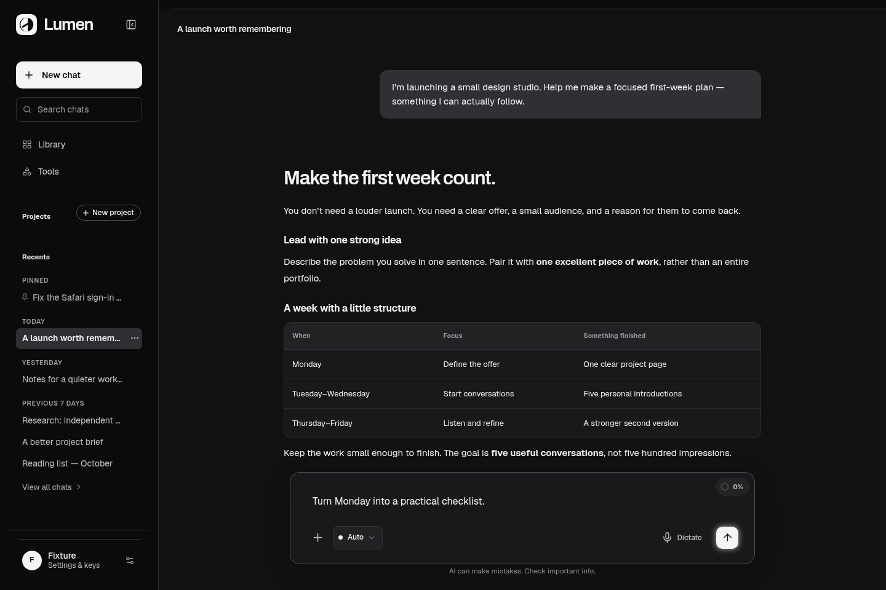
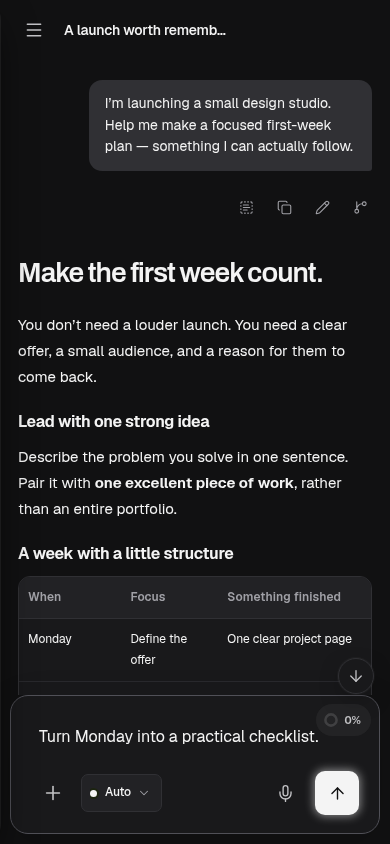

A / Aperture
Lumen
A quieter, sharper Lumen.


An interrupted circle carries the Eclipse forward. A narrow navigation rail holds a rounded writing stage; confident headings give the answer a clear beginning.
Review Aperture at full size ↓
Review Aperture at full size ↓